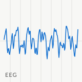

MODWT-MRA-Based Activity-Aware Epilepsy Discrimination Using Single-Channel Wearable EEG During Activities of Daily Living
Results in Engineering, 2026
Tells epileptic and healthy subjects apart during everyday activities, using MODWT multiresolution features from a single wearable EEG channel.